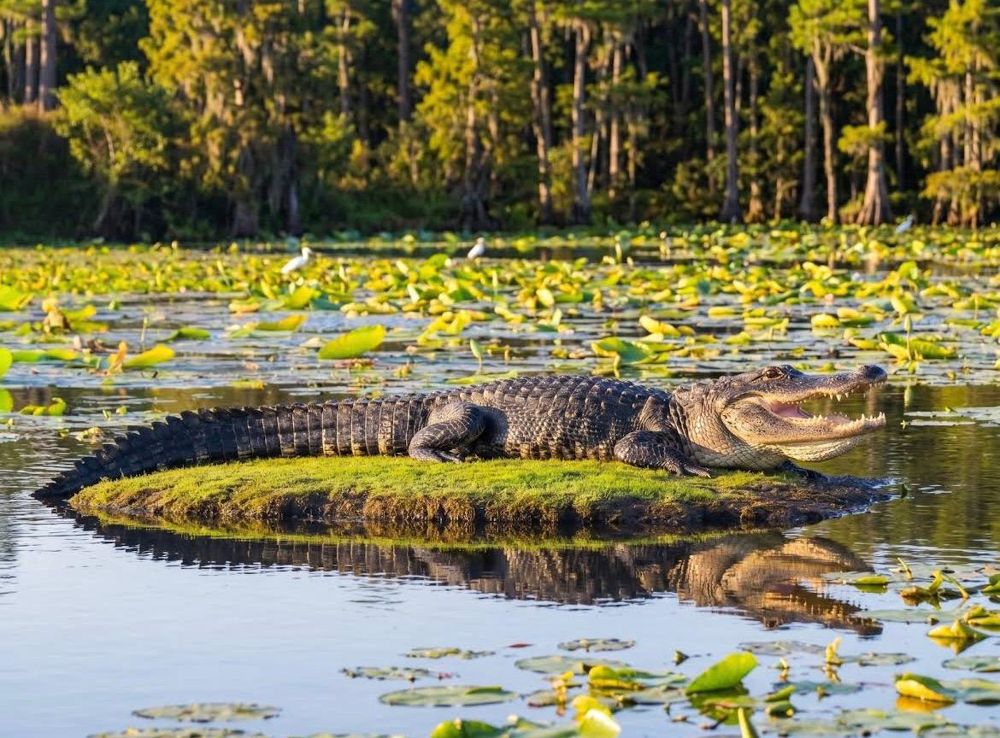

Guided lake and mangrove tours where you watch crocodiles in the wild from a safe distance — then watch the sky burn gold over the water.Des visites guidées des lacs et des forêts de mangroves où vous observez les crocodiles dans la nature à une distance sécuritaire — puis regardez le ciel devenir doré au-dessus de l'eau.Geführte See- und Mangroventouren, bei denen Sie Krokodile aus sicherer Entfernung beobachten — dann beobachten Sie, wie der Himmel über dem Wasser gold wird.Tours guiados por lagos y manglares donde observas cocodrilos en estado silvestre desde una distancia segura — luego mira el cielo ponerse dorado sobre el agua.Экскурсии по озёрам и мангровым лесам, где вы наблюдаете за крокодилами в дикой природе с безопасного расстояния — затем смотрите, как небо становится золотистым над водой.
Wild Crocodile Adventure is a unique eco-tourism experience located in the beautiful coastal region of Trincomalee, near the scenic paradise of Nilaveli. We offer safe and guided wildlife tours through serene lakes, rivers, and mangrove ecosystems, bringing you closer to nature in a responsible way.Wild Crocodile Adventure est une expérience écotouristique unique située dans la belle région côtière de Trincomali, près du paradis pittoresque de Nilaveli. Nous offrons des visites guidées sécuritaires de la faune à travers des lacs sereins, des rivières et des écosystèmes de mangroves, vous rapprochant de la nature de manière responsable.Wild Crocodile Adventure ist ein einzigartiges Ökotourismus-Erlebnis in der wunderschönen Küstenregion von Trincomalee, in der Nähe des malerischen Paradieses Nilaveli. Wir bieten sichere und geführte Wildtiertouren durch ruhige Seen, Flüsse und Mangroven-Ökosysteme an, die Sie der Natur auf verantwortungsvolle Weise näher bringen.Wild Crocodile Adventure es una experiencia de ecoturismo única ubicada en la hermosa región costera de Trincomalee, cerca del paraíso pintoresco de Nilaveli. Ofrecemos tours de vida silvestre seguidos y guiados a través de lagos serenos, ríos y ecosistemas de manglares, acercándote a la naturaleza de manera responsable.Wild Crocodile Adventure — уникальный опыт экотуризма, расположенный в красивом прибрежном регионе Тринкомали, недалеко от живописного рая Ниловели. Мы предлагаем безопасные и управляемые туры по дикой природе через безмятежные озёра, реки и мангровые экосистемы, приближая вас к природе ответственным образом.
Our main focus is a safe and close wildlife viewing experience. Under the guidance of experienced local experts, you'll observe crocodiles in their natural habitat from a secure distance — every tour is carefully managed so guests can enjoy wildlife without any risk.Notre objectif principal est une expérience d'observation de la faune sécuritaire et rapprochée. Sous la direction d'experts locaux expérimentés, vous observerez les crocodiles dans leur habitat naturel à une distance sécuritaire — chaque excursion est soigneusement gérée pour que les clients profitent de la faune sans aucun risque.Unser Hauptfokus liegt auf einem sicheren und nahen Wildtierbeobachtungserlebnis. Unter der Anleitung erfahrener lokaler Experten beobachten Sie Krokodile aus sicherer Entfernung in ihrem natürlichen Lebensraum — jede Tour wird sorgfältig verwaltet, damit Gäste die Tierwelt ohne Risiko genießen können.Nuestro enfoque principal es una experiencia segura y cercana de observación de vida silvestre. Bajo la dirección de expertos locales experimentados, observarás cocodrilos en su hábitat natural desde una distancia segura — cada tour se administra cuidadosamente para que los huéspedes disfruten de la vida silvestre sin riesgo alguno.Наш основной фокус — безопасный и близкий опыт наблюдения за дикой природой. Под руководством опытных местных экспертов вы будете наблюдать крокодилов в их естественной среде обитания с безопасного расстояния — каждая экскурсия тщательно управляется, чтобы гости могли наслаждаться дикой природой без рисков.

Every tour is led by experienced local experts who know the lakes, the wildlife, and how to keep you safe while close to nature.Chaque excursion est dirigée par des experts locaux expérimentés qui connaissent les lacs, la faune et comment vous garder en sécurité près de la nature.Jede Tour wird von erfahrenen lokalen Experten geleitet, die die Seen, die Tierwelt kennen und wissen, wie sie Sie sicher halten, während Sie der Natur nahe sind.Cada tour es dirigido por expertos locales experimentados que conocen los lagos, la vida silvestre y cómo mantenerte seguro cerca de la naturaleza.Каждую экскурсию ведут опытные местные эксперты, которые знают озёра, дикую природу и как держать вас в безопасности рядом с природой.
Observe crocodiles in their natural habitat from a secure, well-managed distance — thrilling, never risky.Observez les crocodiles dans leur habitat naturel à une distance sécuritaire et bien gérée — captivant, jamais risqué.Beobachten Sie Krokodile aus sicherer, gut verwalteter Entfernung in ihrem natürlichen Lebensraum — aufregend, niemals riskant.Observa cocodrilos en su hábitat natural desde una distancia segura y bien administrada — emocionante, nunca arriesgado.Наблюдайте крокодилов в их естественной среде обитания с безопасного, хорошо управляемого расстояния — захватывающе, никогда не опасно.
Time your tour for the golden hour, when the lake mirrors a sky of gold and orange.Planifiez votre visite pour l'heure dorée, quand le lac reflète un ciel d'or et d'orange.Zeitpunkt Ihrer Tour für die goldene Stunde, wenn der See einen Himmel aus Gold und Orange widerspiegelt.Planifica tu tour para la hora dorada, cuando el lago refleja un cielo de oro y naranja.Спланируйте вашу экскурсию на золотой час, когда озеро отражает небо из золота и оранжевого.
Along with crocodile encounters, the journey becomes even more magical as the sun sets over the lake. As it slowly drops behind the hills, the sky turns gold and orange, and the calm water reflects it back — a peaceful, unforgettable close to the day. Perfect for nature lovers, photographers, and anyone chasing both adventure and stillness.Avec les rencontres avec les crocodiles, le voyage devient encore plus magique au coucher du soleil. Alors qu'il descend lentement derrière les collines, le ciel devient doré et orange, et l'eau calme le reflète — une fin paisible et inoubliable de la journée. Parfait pour les amoureux de la nature, les photographes et tous ceux en quête d'aventure et de sérénité.Mit Krokodilbegegnungen wird die Reise noch magischer, wenn die Sonne über dem See untergeht. Während sie langsam hinter den Hügeln versinkt, wird der Himmel gold und orange, und das ruhige Wasser reflektiert es zurück — ein friedlicher, unvergesslicher Tagesabschluss. Perfekt für Naturliebhaber, Fotografen und alle, die sowohl Abenteuer als auch Stille suchen.Junto con los encuentros de cocodrilos, el viaje se vuelve aún más mágico cuando el sol se pone sobre el lago. Mientras desciende lentamente detrás de las colinas, el cielo se vuelve dorado y naranja, y el agua tranquila lo refleja — un cierre pacífico e inolvidable del día. Perfecto para amantes de la naturaleza, fotógrafos y cualquiera que busque tanto aventura como tranquilidad.Вместе с встречами крокодилов путешествие становится ещё более волшебным по мере заката солнца над озером. По мере того, как оно медленно падает за холмы, небо становится золотистым и оранжевым, и спокойная вода отражает его обратно — мирное, незабываемое завершение дня. Идеально для любителей природы, фотографов и всех, кто ищет как приключение, так и спокойствие.
"Watching a crocodile slide off the bank just metres from our boat was unreal — and I never felt unsafe for a second. The guide's knowledge made it.""Regarder un crocodile glisser du rivage à quelques mètres de notre bateau était surréaliste — et je ne me suis jamais senti en danger. Les connaissances du guide ont tout rendu possible.""Ein Krokodil beobachten, das gerade Meter von unserem Boot rutschte, war unwirklich — und ich habe mich nie unsicher gefühlt. Das Wissen des Führers machte es.""Ver un cocodrilo deslizarse de la orilla a solo metros de nuestro bote fue irreal — y nunca me sentí inseguro por un segundo. El conocimiento del guía lo hizo.""Наблюдать, как крокодил скользит с берега всего в метрах от нашей лодки, было нереально — и я ни секунды не чувствовал себя в опасности. Знания гида сделали это возможным."
"We came for the crocodiles and left talking about the sunset. The whole lake turned gold. Best hour of our trip to Sri Lanka.""Nous sommes venus pour les crocodiles et nous avons parlé du coucher de soleil en partant. Tout le lac est devenu doré. La meilleure heure de notre voyage au Sri Lanka.""Wir kamen für die Krokodile und sprachen beim Verlassen über den Sonnenuntergang. Der ganze See wurde golden. Beste Stunde unserer Reise nach Sri Lanka.""Vinimos por los cocodrilos y nos fuimos hablando del atardecer. Todo el lago se volvió dorado. La mejor hora de nuestro viaje a Sri Lanka.""Мы пришли за крокодилами и уходили, говоря о закате. Всё озеро стало золотистым. Лучший час нашей поездки на Шри-Ланку."
"Professional, calm, and genuinely passionate about the wetlands. My kids were thrilled and I was relieved at how careful everything was.""Professionnel, calme et véritablement passionné par les zones humides. Mes enfants étaient ravis et j'étais soulagé de voir à quel point tout était soigneusement géré.""Professionell, ruhig und wirklich leidenschaftlich in Bezug auf die Feuchtgebiete. Meine Kinder waren begeistert und ich war erleichtert, wie sorgfältig alles war.""Profesional, tranquilo y genuinamente apasionado por los humedales. Mis hijos estaban emocionados y me alivió lo cuidadoso que fue todo.""Профессиональный, спокойный и действительно увлечённый болотистыми местностями. Мои дети были в восторге, и я облегчена тем, как осторожно всё было."